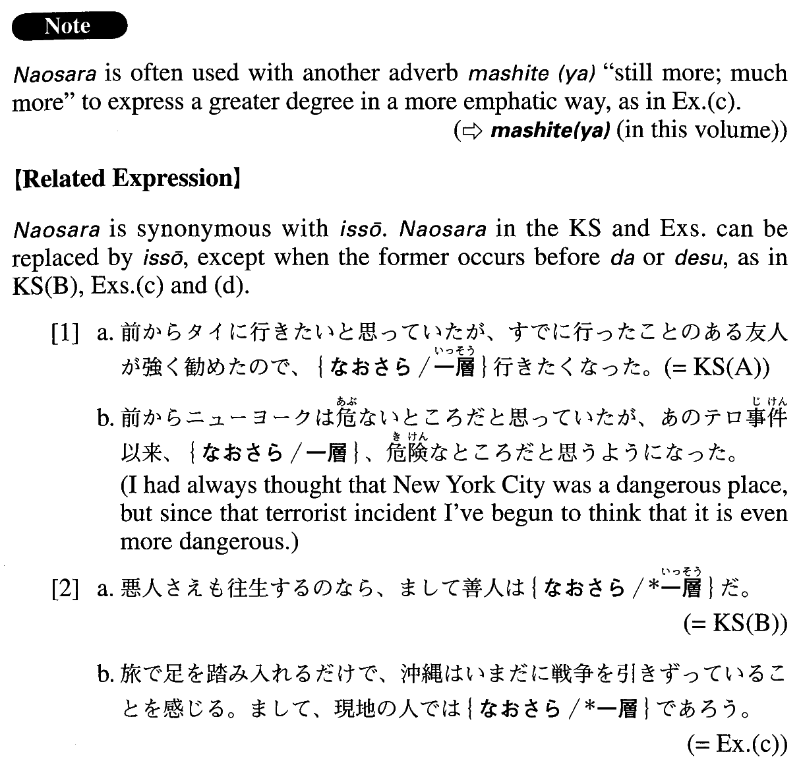

なおさら (A. 348)
- (ksa).
- 前からタイに行きたいと思っていたが、すでに行ったことのある友人が強く勧めたので、なおさら行きたくなった。
- I've wanted to go to Thailand for a long time, and then a friend who has been there strongly recommended it, so I feel like going there even more now.
- (ksb).
- 悪人さえも往生するのなら、まして善人はなおさらだ。
- If even a bad person can go to heaven, then a good person has an even better chance.
- (a).
- 貧乏を弁解すると、なおさら貧乏くさく聞こえる。
- If you make excuses for being poor you will seem (literally: sound) still poorer.
- (b).
- このチーズは搾りたての新鮮な牛乳で作るから、なおさらおいしい。
- This cheese is made from milk fresh from the cow so it tastes even more delicious.
- (c).
- 旅で足を踏み入れるだけで、沖縄はいまだに戦争を引きずっていることを感じる。まして、現地の人ではなおさらであろう。
- When you just go there as a traveller, you get a sense that Okinawa still hasn't gotten over the war. The local people must feel that way even more so.
- (d).
- 英語を書くのは難しいが、正確さが要求される科学論文を書くのはなおさらだ。
- It is hard to write in English, but it is still harder to write a scientific paper that requires accuracy.
- (e).
- アジア諸国の学者や政府が、この教科書を詳細かつ適確に批判し、発行しないよう強く求めたにもに関わらず検定を通ったということは、なおさら重大です。
- It is all the more serious that this textbook has passed the inspection even though scholars and governments of Asian countries aptly criticized it in detail and urged the publisher not to print it.
